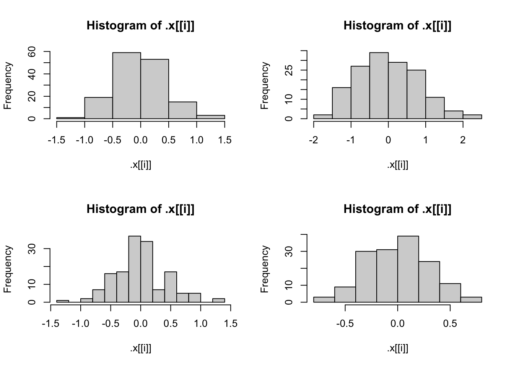

The purpose of the lapply() function is to apply a function to a list, and return a list. The equivalent in the purrr package is the map() function.
lapply(X = my_list, FUN = cor, method = "kendall")
method = "kendall" needs to be after defining FUN = cor, not within cor()
Two advantages of using the purrr package over base R are the helper functions included in purr and the general consistency it has.
A side-effect function is a function does not automatically return a modified version of the data. Examples include print() and plot().
You can create a variable called sd within a function and not have it overwrite sd() from base R because R creates a separate environment for your functions, with the objects created within thr function only existing while the function is being run.
Task 2 : Writing R Functions
library(tidyverse)
── Attaching core tidyverse packages ──────────────────────── tidyverse 2.0.0 ──
✔ dplyr 1.1.4 ✔ readr 2.1.5
✔ forcats 1.0.0 ✔ stringr 1.5.1
✔ ggplot2 3.5.2 ✔ tibble 3.3.0
✔ lubridate 1.9.4 ✔ tidyr 1.3.1
✔ purrr 1.1.0
── Conflicts ────────────────────────────────────────── tidyverse_conflicts() ──
✖ dplyr::filter() masks stats::filter()
✖ dplyr::lag() masks stats::lag()
ℹ Use the conflicted package (<http://conflicted.r-lib.org/>) to force all conflicts to become errors
#1. # define a function to return the root mean squared error, allow for the removal of NAs by included ellipsesgetRMSE <-function(responses, predictions, ...){ RMSE =sqrt(mean((responses - predictions)^2, ...)) RMSE}#2. # run code to create response values and predictionsset.seed(10)n <-100x <-runif(n)resp <-3+10* x +rnorm(n)pred <-predict(lm(resp ~ x), data.frame(x))# test the getRMSE() functiongetRMSE(responses = resp, predictions = pred)
[1] 0.9581677
# replace two of the response values with NA_real_resp_na <- respresp_na[51] =NA_real_resp_na[11] =NA_real_# test the getRMSE() function without specification to remove missing valuesgetRMSE(responses = resp_na, predictions = pred)
[1] NA
# test the getRMSE() function with specification to remove missing valuesgetRMSE(responses = resp_na, predictions = pred, na.rm =TRUE)
[1] 0.9547445
#. # define the MAE functiongetMAE <-function(responses, predictions, ...){ MAE <-mean(abs(responses - predictions), ...) MAE}#4. # create response and prediction values for MAEset.seed(10)n <-100x <-runif(n)resp <-3+10* x +rnorm(n)pred <-predict(lm(resp ~ x), data.frame(x))# test the getMAE() functiongetMAE(responses = resp, predictions = pred)
[1] 0.8155776
# replace two of the response values with NA_real_resp_na <- respresp_na[51] =NA_real_resp_na[11] =NA_real_# test the getMAE() function without specification to remove missing valuesgetMAE(responses = resp_na, predictions = pred)
[1] NA
# test the getMAE() function with specification to remove missing valuesgetMAE(responses = resp_na, predictions = pred, na.rm =TRUE)
[1] 0.8103637
# 5# create a wrapper function to produce one or both of the RMSE and MAE, with values returned with appropriate namesmetric_wrapper <-function(resps, preds, metric =c("RMSE", "MAE"), ...){if(!is.vector(resps)){stop("Error! 'resps' is not a vector.") }if(!is.vector(preds)){stop("Error! 'preds' is not a vector.") }if(!is.atomic(resps)){stop("Error! 'resps' is not atomic.") }if(!is.atomic(preds)){stop("Error! 'preds' is not atomic.") }if(!is.numeric(resps)){stop("Error! 'resps' is not numeric.") }if(!is.numeric(preds)){stop("Error! 'preds' is not numeric.") } # I did not combine the if statements so the user will know specifically what the issue with their inputs is# create an empty list to put your results in results <-list()# check if RMSE is in the metric, if it is, calculate it using getRMSE() and return it under the name RMSEif ("RMSE"%in% metric) { results$RMSE <-getRMSE(resps, preds, ...) }# check if MAE is in the metric, if it is, calculate it using getMAE() and return it under the name MAEif ("MAE"%in% metric) { results$MAE <-getMAE(resps, preds, ...) }# return the results as a vector by unlistingreturn(unlist(results))}#6. # create response and prediction values for the wrapper functionset.seed(10)n <-100x <-runif(n)resp <-3+10* x +rnorm(n)pred <-predict(lm(resp ~ x), data.frame(x))# test the wrapper function with defaults (both RMSE and MAE)metric_wrapper(resps = resp, preds = pred)
RMSE MAE
0.9581677 0.8155776
# test the wrapper function only on RMSEmetric_wrapper(resps = resp, preds = pred, metric ="RMSE")
RMSE
0.9581677
# test the wrapper function only on MAEmetric_wrapper(resps = resp, preds = pred, metric ="MAE")
MAE
0.8155776
# replace two of the response values with NA_real_resp_na <- respresp_na[51] =NA_real_resp_na[11] =NA_real_# test the wrapper function without specification to remove missing valuesmetric_wrapper(resps = resp_na, preds = pred)
RMSE MAE
NA NA
# test the wrapper function with specification to remove missing valuesmetric_wrapper(resps = resp_na, preds = pred, na.rm =TRUE)
RMSE MAE
0.9547445 0.8103637
# test the wrapper function only on RMSE after adding missing valuesmetric_wrapper(resps = resp_na, preds = pred, metric ="RMSE", na.rm =TRUE)
RMSE
0.9547445
# test the wrapper function only on MAE after adding missing valuesmetric_wrapper(resps = resp_na, preds = pred, metric ="MAE", na.rm =TRUE)
MAE
0.8103637
# test the wrapper function while returning a non-vector for the responsemetric_wrapper(resps = iris, preds = pred)
Error in metric_wrapper(resps = iris, preds = pred): Error! 'resps' is not a vector.
Task 3 : Practice with purrr
# linear model objectlm_fit1 <-lm(Sepal.Length ~ Sepal.Width + Species, data = iris)# 1. pull coefficients in three different ways# with $lm_fit1$coefficients
# 2. fit different models and use map() and pluck() to get all the coefficientslm_fit2 <-lm(Sepal.Length ~ Sepal.Width, data = iris)lm_fit3 <-lm(Sepal.Length ~ Petal.Width + Sepal.Width + Species, data = iris)lm_fit4 <-lm(Sepal.Length ~ Petal.Width + Petal.Length + Sepal.Width + Species,data = iris)fits <-list(lm_fit1, lm_fit2, lm_fit3, lm_fit4)# pull out all the coeffientsmap(fits, pluck("coefficients"))
# 4. create histograms of the residuals for each model# set up 2x2 plotting windowpar(mfrow =c(2, 2))# create histogram with map(), walk() and histfits |>map(pluck("residuals")) |>walk(hist)

# 5. redo part 4 with adding names via set_names() and changing walk() to iwalk(), using an anonymous function for the histogramfits |>map(pluck("residuals")) |>set_names("fit1", "fit2", "fit3", "fit4") |>iwalk(\(x, idx) hist(x, main = idx))